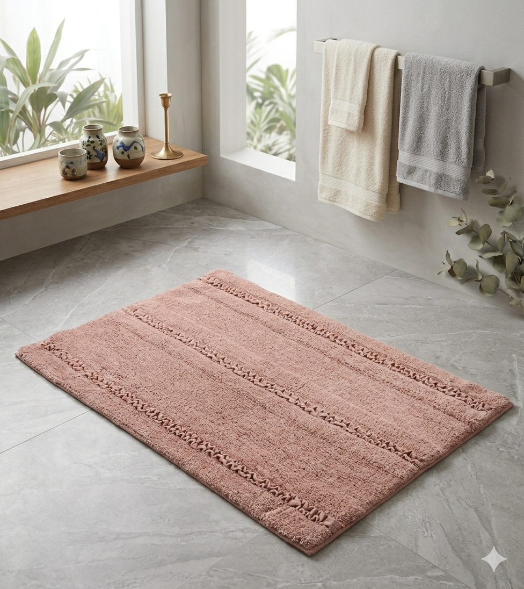
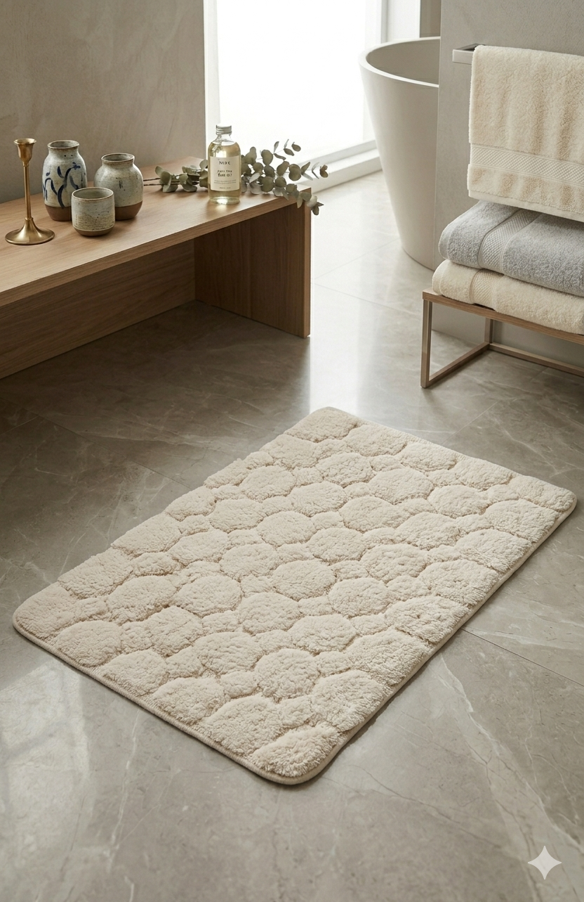

Bath Collection
Bathmats
Primarily crafted in 100% cotton and cotton-blend yarns, with options in polyester, bamboo and viscose for specific performance requirements. Produced using tufting, cut & loop and embroidery techniques. Non-slip latex backing available. Standard sizes 50x80cm and 60x90cm; custom dimensions for hospitality contracts.
AH-BT-BM-001
Cut & Loop Bathmat
The cut & loop pile construction creates a two-level texture that is both visually striking and highly absorbent. 100% ring-spun cotton, with a dense pile weight that reads luxurious underfoot. A reliable, premium-feeling choice for lifestyle retail and mid-to-upper hospitality.
AH-BT-BM-002
Embroidered Bathmat
A flat-woven cotton bathmat with hand-embroidered border and motif detailing — decorative enough for boutique retail, functional enough for daily use. Designs available in botanical, geometric and custom patterns. A strong seller for premium bathroom gifting and lifestyle retail.
AH-BT-BM-003
Combo Tufted Bathmat
A contemporary combination of tufted pile and flat-woven sections that creates bold geometric or stripe effects with real textural depth. The contrast between pile heights gives a graphic, considered look that appeals to modern interiors buyers. Dense cotton construction, ultra-absorbent.

AH-BT-BM-004
Blush Stripe Tufted Bathmat
Dusty rose-blush tufted bathmat with a horizontal ribbed stripe texture and a delicate dotted stitch border detail in a tonal deeper shade. The warm, muted pink palette is highly versatile — equally at home in a boutique hotel bathroom and a premium lifestyle retail range. Dense pile, ultra-absorbent cotton construction.
AH-BT-BM-005
Ivory Scallop Edge Tufted Bathmat
Elegant ivory tufted bathmat with a scalloped/wavy outer edge and a raised rectangular tufted border frame inside — the shaped silhouette sets it apart from standard rectangular bathmats. Clean, tonal and quietly luxurious. Exceptional appeal for premium interiors retail, boutique hospitality and gifting programmes. Available in natural, ivory and ecru.

AH-BT-BM-006
Cream Ribbed Stripe Plush Bathmat
Thick, plush cream bathmat with a raised vertical ribbed stripe construction — deep pile, extraordinarily soft underfoot and highly absorbent. The ribbed texture gives it a spa-like quality that justifies a premium price point. A high-volume staple for lifestyle retail and upper-tier hospitality where the feel of the product is as important as the look.

AH-BT-BM-007
Natural Cobblestone Tufted Bathmat
Natural/cream tufted bathmat with an all-over raised cobblestone pebble pattern — each rounded form individually tufted to create a tactile, organic surface that massages the feet. Simultaneously functional and decorative. The pebble motif gives it a spa-wellness appeal that resonates strongly with contemporary interiors buyers and premium bathroom retail.

AH-BT-BM-008
White & Blue Damask Tufted Bathmat
Crisp white bathmat with a cut-pile blue damask baroque medallion pattern — a statement piece for bathrooms that want personality without sacrificing practicality. The blue and white palette is a perennial favourite for coastal, classic and boutique interiors. Dense cotton pile, excellent absorbency. A strong premium retail proposition and a visual standout in any bathroom range.

AH-BT-BM-009
Beige Scallop Edge Border Bathmat
Warm beige tufted bathmat with a scalloped outer edge and a raised brick-pattern rectangular tufted border — a more structured, architectural take on the shaped bathmat. The tonal beige-on-beige palette is warm, neutral and extremely versatile. Works beautifully in both contemporary and traditional bathroom schemes. A refined, design-led piece for premium retail programmes.

AH-BT-BM-010
Ivory Ruffle Edge Cotton Bathmat
Ivory flat-woven cotton bathmat with a generous ruffled/fringe border trim all around — decorative, romantic and distinctly different from standard tufted options. The ruffle edge gives it a boutique, feminine character that appeals strongly to lifestyle retail, gifting and premium bathroom collections targeting a female audience. A standout piece that earns display prominence.